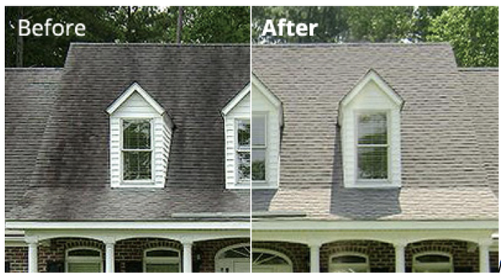

Under Pressure
Exterior Cleaning and Restoration Services
Our professional technicians provide exterior cleaning services to Spring Hill and surrounding areas including Hernando county, Citrus county, and Pasco county.
"Quality first, satisfaction always!"
Would you like to raise the value of your home by ten percent?
Our company offers several exterior services that will not only boost your curb appeal, but could also help raise the resale value of your home. When it comes to home maintenance, it’s important to maintain a clean property for aesthetic value and curb appeal. When mold, mildew, algae and other airborne contaminants are allowed to remain on the exterior surfaces of a property, they can cause premature wear on your siding, roof, concrete and gutters. Working with a professional Exterior Cleaning Company can increase the longevity of such surfaces and boost the property’s resale value.
If you choose to use Under Pressure Exterior Cleaning & Restoration, we take quality seriously and you will always get the best with our exterior cleaning solutions. We look forward to serving our community in the Hernando, Citrus, and Pasco areas!
Exterior Cleaning Services
When it comes to the inside of your home, you usually stick to a pretty regular cleaning schedule, or at least you try to. But, it is so easy to forget that the outside of your home needs attention as well! After a long full year of several different seasonal changes, all sorts of dirt, grime, mold, mildew and other airborne contaminants collect on your siding, windows, walkways, patios, roofs,etc. That’s where Under Pressure Exterior Cleaning & Restoration can help. We specialize in residential and commercial exterior cleaning. Whether it is exterior house cleaning, roof cleaning, concrete cleaning, or gutter whitening we have the exterior cleaning experience necessary to get the job done. Our goal is to make your property the beacon of curb appeal which will last for years to come.
Soft Wash House Washing
Soft washing is the use of water-based, biodegradable chemicals to break down dirt, grime, molds, mildews, algae and bacteria - leaving the surface clean and sanitized. Soft washing does not deteriorate or damage any surface of your home like power/pressure washing often can.
Surface Cleaning
Every driveway / patio is pre-treated and post-treated if you want it to be cleaned effectively. It is important to hire a professional pressure washing service. Under Pressure Exterior Cleaning & Restoration will go above and beyond for your concrete / patio / deck pressure washing and all other exterior cleaning needs.
Soft Wash Roof Cleaning
When you decide to clean your roof, it is absolutely imperative that you choose a soft washing contractor. Traditional power washing can blast away shingles and cause flashing to leak. Even worse, it can negate any warranty that you may have on your roofing system. The most recommended way to clean a roof is via a soft wash method. We will utilize a gentle stream of water and a proprietary blend of biodegradable algaecides and detergents to lift stains from your roof and to kill algae, moss, mildew or lichen present. Afterwards, your roofing will be restored to its original beauty.
Gutter Maintenance

Homeowners know maintenance is the key to preventing costly future repairs. One simple way to prevent costly home repairs down the road is to keep your gutters and downspouts free of debris. We also offer removal of streaks and cleaning of the outside of the gutter for an additional cost.
Fence Cleaning
Sun exposure as well as climate conditions can take a toll on your fence. Bring your fencing back to its initial glory with our specialized cleansing procedure, which deals with all sorts of fencing including but not limited to wood, vinyl, brick or synthetic. A good cleansing with the right approach will help maintain your fence quality and prevent replacing it more often.
Patio & Deck Cleaning
While lots of composite decks as well as patio brands proclaim to be “maintenance- free”, they inevitably begin to build up grime, algae and mold on the surface. The very same can be said for all other material used in patios and decks. Wash away all that grime and get your patio back to an immaculate condition so you can enjoy the outdoors.
Pool Enclosures & Lanais
Remove the mold, mildew, and algae that has made its home in your screened enclosure. Screened enclosure cleaning is time consuming and it takes a gentle, low pressure approach to safely clean them. The aluminum frame and screen must be sprayed from every angle to remove all the contaminants. If too much pressure is used, the screen can be stretched or blown out and the pool deck can chip or peel. We let our biodegradable cleaning detergents do the work for us. We can then proceed to rinse the enclosed area clean with low pressure.
Window Cleaning
Are grimy windows clouding your view of the world, leaving your beautiful home or business’s exterior less than ideal? Are you tired of dragging awkward ladders around your house in an attempt to reach second-story windows, only to find your cleaning attempts leave the windows covered in streaks? It’s time to put down the paper towels, put away the ladder, pick up the phone and call us at Under Pressure Exterior Cleaning & Restoration.
Pavers, Rock Beds, Brick and Stone
Do you ever catch yourself looking at your pavers, rock beds, bricks or stone wondering what kind of gunk gets stuck between those? Or maybe you're wondering how you're going to get all the gunk off. Our biodegradable cleaning solutions can reach even the tiniest of cracks. Exterminating all the build up caused by the surrounding elements. Instead of spending countless hours trying to get these tricky materials clean, call us and we will simplify your life with our simple solutions. We also offer sealing services for these types of materials that will cut down on cost of cleaning over a few years.
What is Soft Washing?
Soft washing is a smarter and safer alternative to conventional pressure/power washing. Our cleansing formula established by Under Pressure Exterior Cleaning & Restoration uses water-based, eco-friendly chemicals to break down dirt and grime while also removing pest nests and webs. In addition, this method of exterior cleaning kills mold, mildew and algae as well as bacteria on your roofing system and other surfaces, leaving them clean and sanitized.
Soft washing eliminates microorganisms that trigger tarnishing while power/pressure washing simply cleans off the surface layer. Furthermore, unlike pressure/power washing, soft washing solutions are applied at pressures not much more than a standard garden hose, greatly reducing any chances of damage caused by pressure.
If you're looking for a way to get rid of what’s growing on the surfaces around your home or business, break the cycle of constant pressure/power washing and make use of a cleaning option that treats the issues like a pest and not a stain. Then soft washing is just what you have been looking for.
Benefits of Soft Washing
- ✅ Eco-FriendlyBiodegradable and uses less water.
- ✅ Long LastingLasts 4 - 6 times longer than pressure washing.
- ✅ Over 100,000roofs and structures cleaned with soft wash.
- ✅ Amazing ResultsTreats the infestations causing stains.
- ✅ No Pressure DamageNo harmful, high- impact cleaning.